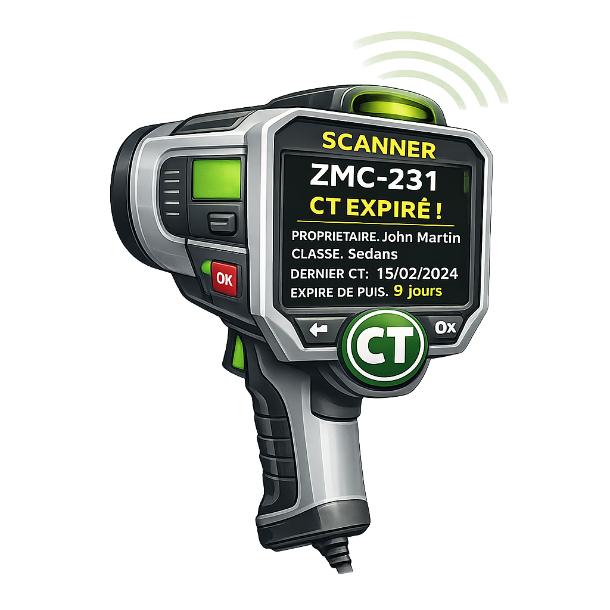

Installation rapide
1) Import SQL :
sql/install.sql2) Dépose
ducratif_ct dans tes resources3) Configure
config.lua4) Ajoute les items ox_inventory (snippet ci-dessous)
5)
ensure ducratif_ctDépendances
- es_extended (ESX Legacy)
- ox_lib (menus/context/notify)
- ox_inventory (items + metadata)
- oxmysql (requêtes DB)
Note : les items doivent exister dans
ox_inventory/data/items.lua (ox_inventory ne charge pas d’items depuis une ressource externe).
Config essentielle
UseNPC :
true (NPC/marker, public) / false (métier CT)CTDurations : 7 / 14 / 30 jours (modifiables)
BasePriceByClass : prix CT par classe GTA
Fines : amende auto (base par classe + par jour de retard)
Police.scannerRange : portée du scanner (défaut 200m)
Items ox_inventory à ajouter
Ajoute ceci dans ox_inventory/data/items.lua (ou ton système d’items) :
['ct_paper'] = {
label = 'Papier CT',
weight = 5,
stack = false,
close = true,
description = 'Preuve de Contrôle Technique',
client = { export = 'ducratif_ct.ct_paper' }
},
['ct_scanner'] = {
label = 'Scanner CT',
weight = 250,
stack = false,
close = true,
description = 'Scanner police (portée configurable)',
client = { export = 'ducratif_ct.ct_scanner' }
},
Important : les exports pointent vers
ducratif_ct. Ne change pas le nom de ressource (ou adapte les exports).Fonctionnement
- NPC mode : tu vas au point CT → menu → choisis 7/14/30j → paiement auto (bank puis cash) → papier CT reçu.
- Métier mode : l’employé CT lance le menu d’inspection → coche défauts → CT validé ou refusé → logs.
- Police : utilise
ct_scannerpour scanner un véhicule (200m). - Contrôle complet : commande
/ctcontrolen visant un véhicule → menu complet + bouton amende automatique (si CT expiré).
Commandes
- /ctcontrol : police uniquement (configurable) — menu complet (vise un véhicule)
- Métier CT : évènement
ducratif_ct:openJobCT(tu peux le bind à un marker / target / job menu)
Si tu veux un marker pour le métier CT, fais un petit marker job qui déclenche :
TriggerEvent('ducratif_ct:openJobCT')
Image des items
- Va dans ox_inventory\web\images
- Ajoute tes images dans le dossier img (ne change pas les noms)
ct_paper →
ct_paper.png
ct_scanner →
ct_scanner.png
Si tu modifies les noms, il faut tout adapter : nom de l’item → image, data ox_inventory, et config du script.
SQL lié au CT
- Ajoute colonnes CT sur
owned_vehicles - Crée tables :
ct_history,ct_police_actions,ct_fines
Fichier : sql/install.sql
SQL lié au job
- Dans config.lua : mets
Config.UseNPC = falsepour activer le métier CT (et désactiver le NPC). - Dans config.lua : vérifie le nom du job dans
Config.CTJob.name(ex:controletech). - Ajoute le job en base via les tables jobs et job_grades (1 seul grade suffit).
- Redémarre le serveur (ou ESX) puis attribue le job à un joueur (ex:
setjob ID controletech 0).
Fichier : sql/job.sql (crée le job rapidement !)
Dépannage
“Véhicule introuvable en base” : la plaque n’existe pas dans
owned_vehicles (ou format plaque différent).“Accès refusé” : job police/CT non conforme à la config.
Item ne fait rien : vérifier
client.export dans ox_inventory/data/items.lua + nom de ressource.Debug : active
Config.Debug = true.